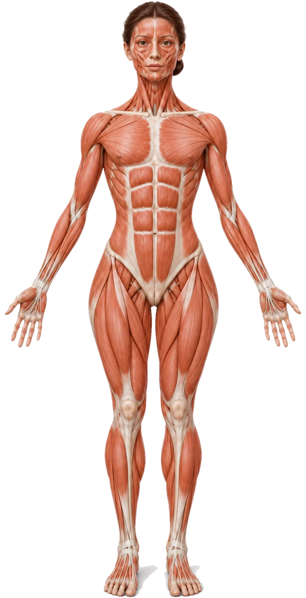
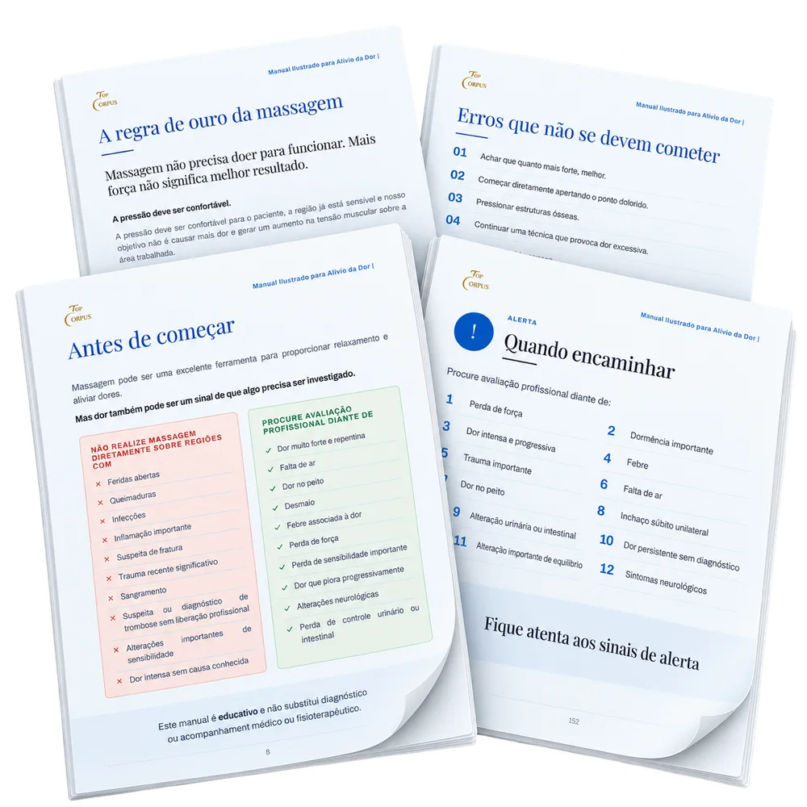
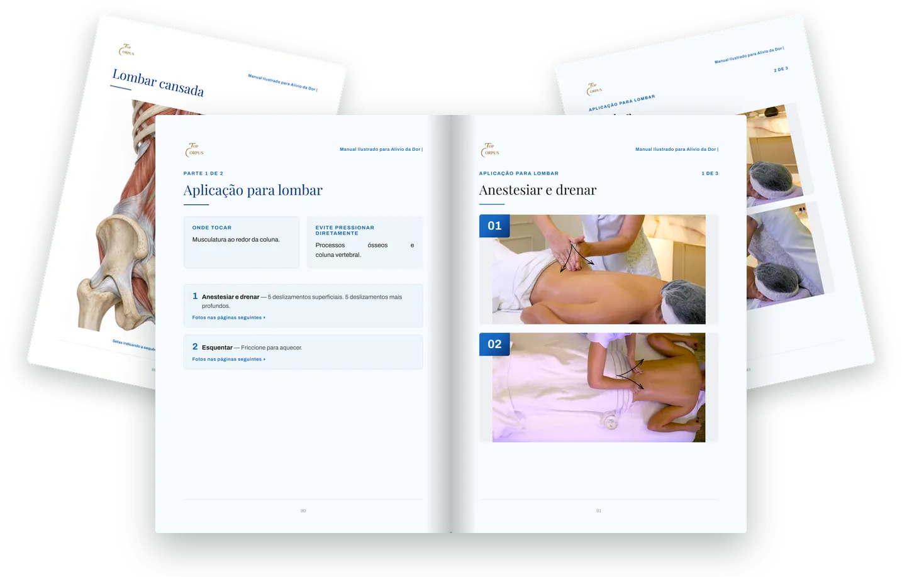
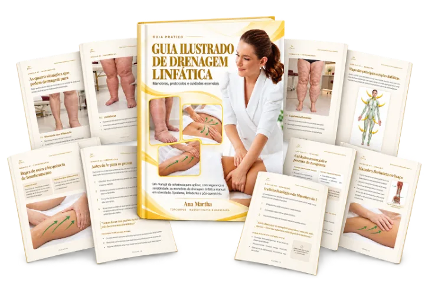
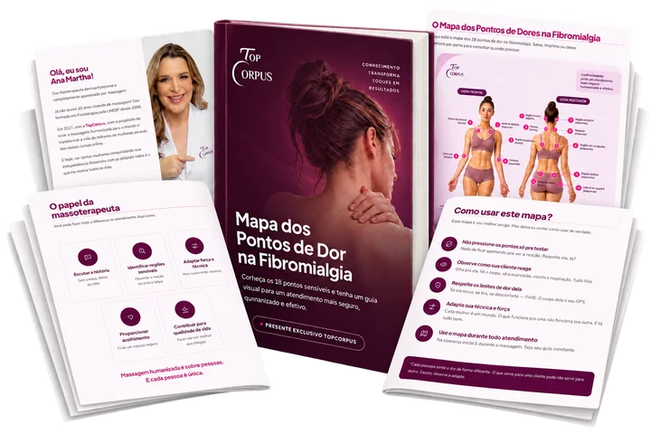

10 minutos de massagem certa aliviam mais a dor que uma hora de massagem errada
A diferença está em saber onde tocar.O Manual mostra o ponto e a manobra de 23 regiões do corpo em mais de 70 Massagens Ilustradas.
Escolha a dor no sumário e aprenda o ponto certo
Criado por uma fisioterapeuta com 20 anos de prática
Veja algumas dores que o Manual Ilustrado te ensina a aliviar

1Mandíbula tensa ao acordar
2Pescoço duro que vira dor de cabeça
3Ombros tensos
4Nó no meio das costas
5Lombar travada
6Braços e punhos cansados
7Glúteo e quadril que doem e se espalham
8Dor que desce pela perna
9Pernas pesadas no fim do dia
1Mandíbula tensa ao acordar
2Pescoço duro que vira dor de cabeça
3Ombros tensos
4Nó no meio das costas
5Lombar travada
6Braços e punhos cansados
7Glúteo e quadril que doem e se espalham
8Dor que desce pela perna
9Pernas pesadas no fim do dia
E se a dor for indício de algo mais sério?O Manual serve mesmo assim?
Serve sim, e foi por isso que eu fiz do jeito que fiz.
O Manual mostra quando NÃO massagear e encaminhar para um profissional de
saúde, como dor forte e repentina, febre junto com a dor, perda de força e inchaço súbito
em uma perna.
Aqui você encontra onde tocar, qual pressão usar, por quanto tempo, e o que não é para
mexer de jeito nenhum, para cada região.
Afinal, saber a hora de parar também faz parte da massagem.

Cada dor tem uma página. E a página diz o que fazer

Lombar travada, pescoço duro, perna pesada…
Para cada uma, o Manual mostra a foto do lugar, onde pôr a mão, quanto apertar e por
quanto tempo.
Cinco etapas, sempre na mesma ordem
O Método Validado que eu uso há anos. Cada manobra segue a mesma sequência, do primeiro
toque até o relaxamento final:
AAnestesiar – preparar a região para receber o toque
DDrenar – levar o líquido acumulado embora
EEsquentar – aquecer o músculo antes de trabalhar nele
IInvestigar – encontrar o ponto que está realmente tenso
RRelaxar – fechar com movimentos que acalmam
Sem termos técnicos: linguagem direta, com fotos em cada manobra.
Você não vai apertar demais.
O Manual trabalha numa escala de 1 a 10 e nunca passa de 6. A regra que eu ensino há
anos: o corpo não precisa lutar contra as suas mãos.
1
2
3
4
5
6
7
8
9
10
LeveModeradaFora do Manual
Antes de chegar até você, sua cliente já tentou o de sempre…
Tomou um remédio, deitou e esperou passar.
Mas suas mãos podem ajudar.
E ser uma massoterapeuta que alivia dores com massagem fará seus pacientes voltarem sempre.
A maioria das dores do dia a dia nasce de um músculo sobrecarregado, tenso, sensível e
cansado. E um toque bem feito, no lugar certo, com a pressão certa e na direção certa, traz
alívio de verdade.
A massagem não substitui o tratamento, nem a orientação do médico.
Ela é uma aliada, que somada aos cuidados que a pessoa já tem, traz mais alívio e de
forma mais rápida.
No Pacote Premium, você leva o Manual e mais 5 bônus incríveis:
Bônus 1
Vídeo-aula das manobras
Uma sessão de massagem nas costas, com o passo a passo completo de onde colocar as mãos, quanto de pressão usar em cada movimento e onde não encostar.
Bônus 2
Meu contato direto no WhatsApp
Você manda sua dúvida direto pelo WhatsApp e recebe resposta na hora. Seja sábado, domingo, feriado ou de madrugada.
Ana Marthaonline
Sábado
Ana, tô com uma cliente com dor no ombro que desce pro braço. Posso fazer a manobra do trapézio?23:41
Oi! Abre o Manual na página do ombro e confere os alertas antes de começar 😉 Qualquer dúvida, me chama!23:43
Perfeito, obrigada!! 🙏23:44
Bônus 3
Mapa ilustrado de reflexologia
A reflexologia é uma técnica milenar que trabalha pontos específicos dos pés para aliviar dores em outras partes do corpo. Aqui você recebe um mapa ilustrado desses pontos, para ampliar seu repertório.
Bônus 4
Guia ilustrado de drenagem linfática
Um guia visual com as principais regiões linfáticas, os caminhos e o sentido de cada movimento, para você aplicar a drenagem sem ficar adivinhando para que lado ela deve ir.

Bônus 5
Mapa dos Pontos de Dor na Fibromialgia
Conheça os 18 pontos sensíveis e tenha um guia visual para manobras mais seguras e humanizadas.

Eu tinha 6 anos quando descobri o que as minhas mãos podiam fazer
Meu pai, que sempre foi o meu herói, sofreu um grave acidente. Quebrou os ossos da perna,
gemia de dor e, mesmo tomando vários remédios, não conseguia dormir direito.
Eu era só uma criança e queria muito aliviar a dor dele, mas eu não tinha técnica, nem
conhecimento. Eu só tinha as minhas mãos, tão pequenas ainda.
Mesmo assim, comecei a fazer massagem na perna dele, com todo o meu amor.
Até que um dia ele me disse algo que eu nunca mais esqueci:
“Filha, hoje eu dormi sem dor porque você fez massagem em mim. Suas mãos são top.”
Ali eu tive certeza: queria usar as minhas mãos para aliviar dores.
Cresci, me formei em Fisioterapia e transformei isso em profissão.
Muito prazer, eu sou a Ana Martha, fisioterapeuta e fundadora do TopCorpus.
Sou casada, mãe de duas meninas, atuo há 20 anos aliviando dores com massagem humanizada.
Já ganhei prêmio internacional nos Estados Unidos, fui a vários programas de TV e criei o
maior curso de massoterapia humanizada do Brasil, com mais de 60 mil alunas em 60
países.
E foi pensando naquela menina de 6 anos, que só tinha as mãos e muita vontade de ajudar,
que eu coloquei nesse Manual o passo a passo para você aliviar a dor de quem
precisa.
Você tem mais poder nas suas mãos do que imagina.
Muitas das minhas alunas começaram do mesmo jeito: aliviando a dor de alguém de casa.
Primeiro o marido, depois a mãe, depois a amiga que ficou sabendo.
E um dia perceberam que aquilo que faziam por amor tinha valor. Que tinha gente procurando
exatamente isso.
Hoje muitas delas fizeram da massagem uma profissão, e algumas uma renda extra que cabe na
rotina.
Não precisa ser o seu plano agora. O Manual começa pela pessoa que você ama. Mas é bom saber
que essa porta existe, e que ela começa exatamente aqui.
Receba agora mesmo por e-mail · 7 dias de garantia
Veja o que acontece quando as mãos sabem o que estão fazendo:
O marido chegava com dor nas pernas e nas costas e hoje fica disposto para trabalhar
A mãe, com fibromialgia, andou sem bengala depois da massagem
Chegou sem conseguir sair do carro sozinha e saiu andando.
JG
Josiane Gomes MachadoOntem, 20:13
Eu tenho uma sala de atendimento na minha casa, já trabalhava como terapeuta integrativa e agora já estou tendo minhas primeiras clientes de Massoterapia e estou muito feliz com os resultados. Ontem atendi uma senhora com dores no corpo que quase não conseguiu sair sozinha do carro, veio com a filha, as duas fizeram massagem comigo e a senhorinha saiu andando muito melhor e entrou tranquilamente no carro. Hoje falei com ela pra saber como está e fiquei muito feliz com o resultado, disse que dormiu bem e que as dores diminuíram muito. Fiquei mega feliz. Sou de Canoas, RS.
Chegou com dor 10. Saiu com dor 2.
Betina Chaluppe | Massoterapeuta
Boa tarde Ana Martha, tudo bem?
Mas meu relato de hoje é sobre o quão fantástico é podermos diminuir a dor de alguém, hoje agorinha de pouco, fiz um atendimento numa paciente com escoliose, chegou com dor 10, nas costas e nos braços. Ela optou por fazer a sessão inteira só nessas regiões e eu atendi, quando finalizei a sessão ela demorou mais 10 min pra sair da maca, pois estava dormindo, e quando levantou olhou pra mim e disse, nossa você tirou um peso gigante de mim. A dor está em 2.
Fiquei até sem reação por um instante, mas logo processei que tudo é fruto do meu esforço e do seu direcionamento. Obrigada
Esse atendimento mudou o meu dia, e me fez perceber mais ainda, que sou capaz de fazer a diferença.
Um Manual para consultar sempre que for atender
Você pode imprimir ou usar direto pelo celular, sem instalar nada.
Abriu o mapa do corpo, encontrou a região que dói e a página já mostra onde tocar, como
tocar e qual pressão usar.
Não. O Manual foi feito tanto para quem nunca fez massagem, quanto para quem já tem prática, com linguagem direta e sem termos técnicos complicados.
Preciso ser profissional para usar?
Não. O Manual foi feito para qualquer pessoa que queira aliviar a dor de alguém, seja numa maca ou no sofá de casa.
Posso usar com clientes, em atendimento?
Pode. Muita gente imprime e usa ele aberto do lado da maca, justamente para consultar na hora do atendimento.
Preciso de algum equipamento?
Não. Todas as manobras usam só as suas mãos.
Como eu recebo o acesso?
O Manual é enviado para o seu e-mail assim que o pagamento for confirmado.
Funciona para casos como hérnia, gravidez ou escoliose?
Essas situações pedem mais cuidado. O Manual traz os alertas de cada região e mostra quando é melhor não massagear e procurar um profissional de saúde. Ele não substitui avaliação médica ou fisioterapêutica.
E quem toma remédio ou faz algum tratamento médico, pode fazer?
Depende do caso. A massagem ajuda junto com o tratamento e nunca no lugar dele. Com o Manual, você fica sabendo como e quando pode fazer.
E se eu não tiver certeza se a dor é só tensão muscular?
Cada região do Manual tem uma seção de alertas com os sinais de que a dor pode ser mais do que tensão. Se aparecer algum, o Manual orienta a parar e procurar um profissional de saúde. Ele também mostra quando NÃO massagear: inflamação, suspeita de fratura, sinais de trombose e outras situações.
E se eu me arrepender?
Você tem 7 dias de garantia. Se achar que não é o que você precisa no momento, devolvemos todo o seu investimento.